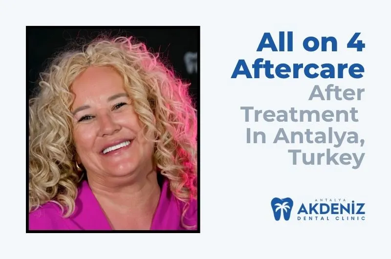
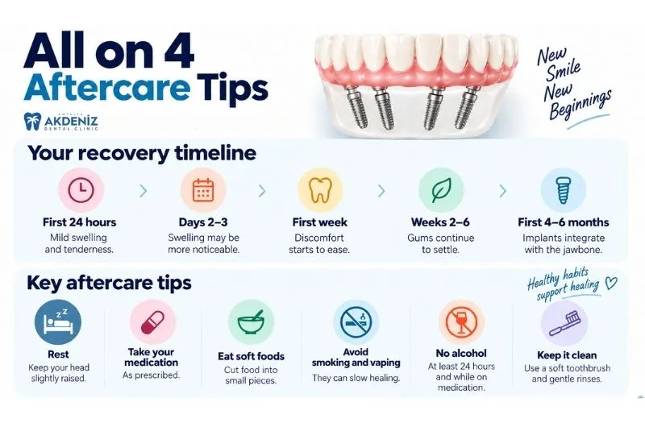

All on 4: уход после лечения начинается ещё до вашего отъезда из Анталии, и восстановление у всех проходит по-разному. На период заживления могут влиять костная пластика, общее состояние здоровья и количество челюстей, на которых проводилось лечение. На раннем этапе часто бывают лёгкий дискомфорт, отёк и синяки. Эти симптомы должны постепенно ослабевать, а не усиливаться.
Сроки восстановления после All on 4: краткий обзор
| Период | Что вы можете заметить | Главные задачи ухода |
|---|---|---|
| Первые 24 часа | Небольшая кровоточивость, болезненность и начало отёка | Отдыхайте, берегите прооперированные участки и принимайте лекарства по назначению |
| 2–3-й день | Отёк может стать заметнее | Продолжайте бережный уход и не давите на временный мост |
| Первая неделя | Дискомфорт должен начать уменьшаться | Соблюдайте гигиену полости рта по инструкции и продолжайте есть подходящую мягкую пищу |
| 2–6-я неделя | Дёсны продолжают заживать | Защищайте мост от жёсткого жевания и приходите на запланированные осмотры |
| Первые 4–6 месяцев | Импланты продолжают срастаться с челюстной костью | Не перегружайте временные зубы и сообщайте о любой подвижности или изменениях прикуса |
| Этап постоянного моста | Могут быть сделаны новые слепки или сканы | Вернитесь на осмотр после подтверждения заживления |
Это общий ориентир. Ваши личные сроки восстановления после All on 4 могут отличаться.
Как ухаживать за имплантами All on 4 дома?
Хороший домашний уход защищает заживающие дёсны и снижает лишнюю нагрузку на импланты. Это не означает агрессивную чистку прооперированной зоны. На раннем этапе обычно уместнее мягкий и регулярный уход.
Принимайте назначенные лекарства строго по указаниям. Не начинайте приём антибиотиков, антисептических ополаскивателей или более сильных обезболивающих без консультации специалиста. Если после отъезда из Турции у вас появятся вопросы, свяжитесь с лечащей клиникой, прежде чем самостоятельно менять рекомендации.
Первые 24 часа после All on 4 в Анталии
Не сплёвывайте часто и не полощите рот с силой: это может нарушить кровяной сгусток в области операции.
Отдыхайте, слегка приподняв голову. Прикладывайте холод к лицу снаружи, если это рекомендовала ваша клиническая команда. Оберните холодный компресс чистой тканью, а не кладите лёд прямо на кожу.
В первые 24 часа:
- Не трогайте прооперированные участки пальцами или языком.
- Избегайте горячей еды и горячих напитков.
- Не пользуйтесь трубочкой.
- Избегайте интенсивных физических нагрузок.
- Принимайте только лекарства, одобренные вашим стоматологом.
- Не курите и не используйте вейп.
- Не употребляйте алкоголь.

Первая неделя послеоперационного ухода после All on 4
Отёк часто становится заметнее в первые два-три дня. Затем он должен начать спадать. Полость рта по-прежнему нужно держать в чистоте, но с прооперированными участками следует обращаться осторожно.
В первые дни для поддержания гигиены можно полоскать рот солевым раствором. Слишком частые полоскания не ускорят восстановление — напротив, они могут раздражать ткани. Обезболивающие и антибиотики, назначенные стоматологом, следует принимать через равные промежутки времени и в течение указанного срока.
Заживление после All on 4 в первые 4–6 месяцев
Снаружи участки операции All on 4 могут выглядеть зажившими раньше, чем импланты полностью срастутся с челюстной костью. В зависимости от плана лечения и индивидуального заживления этот процесс, называемый остеоинтеграцией, может занять несколько месяцев.
Временный мост позволяет вам уехать из клиники с несъёмными зубами, но это не значит, что импланты готовы к жеванию без ограничений. Чрезмерная нагрузка на этом этапе может нарушить заживление. Поэтому жёсткая пища должна оставаться вне меню, пока клиническая команда не подтвердит, что импланты и мост с ней справятся.
Уход за временным мостом All on 4 дома — Анталия
Временный мост All on 4 в Анталии предназначен для периода заживления. Он зафиксирован, поэтому снимать его дома нельзя. Хотя он позволяет говорить и улыбаться, он не так прочен, как запланированный постоянный мост.
Не испытывайте его твёрдой или липкой пищей. Лёд, орехи, жёсткие корки, леденцы и тягучие сладости создают концентрированную нагрузку на временные зубы. Если нарезать еду небольшими кусочками, есть тоже будет проще.
Курение, вейпинг и сроки заживления после All on 4
Курение ухудшает заживление вокруг зубных имплантов. Оно снижает кровоснабжение тканей и связано с более высоким риском осложнений. Вейпинг во время восстановления — не безвредная альтернатива. Никотин всё равно влияет на кровоток, а всасывание и тепло могут раздражать недавно обработанные участки.
Если бросить курить до операции и не курить на протяжении всего заживления, тканям будет легче восстановиться.
Частые вопросы об уходе после All on 4
Сколько длится восстановление после All on 4?
Первоначальный дискомфорт и отёк часто уменьшаются в течение первой-второй недели. Однако сращение имплантов All on 4 с челюстной костью обычно продолжается несколько месяцев. Установку многих постоянных мостов рассматривают примерно через 4–6 месяцев.
Почему нельзя молочное после зубных имплантов?
Отказ от молочных продуктов — не универсальное правило после имплантации. Молоко, йогурт и другие молочные продукты сами по себе не мешают заживлению имплантов. Тем не менее стоматолог может посоветовать на короткое время исключить определённые продукты. Это может быть связано с тошнотой после седации, индивидуальными особенностями питания или рекомендациями, касающимися лекарств. Следуйте советам, данным именно для вашего лечения, а не общему правилу «никакого молочного».
Сложно ли ухаживать за имплантами All on 4?
Уход за имплантами All on 4 вполне посилен, если понимать, где скапливается налёт. В мосте не развивается кариес, но налёт всё же может накапливаться там, где мост прилегает к дёснам, и вокруг соединений с имплантами.
Повседневный уход можно проводить мягкой зубной щёткой и межзубным ёршиком. Уход такой же, как за естественными зубами, и чистить All-on-4 в Анталии и ухаживать за ним несложно.
Сколько ждать, прежде чем пить алкоголь после зубных имплантов?
Алкоголя следует избегать как минимум первые 24 часа после имплантации. После обширной операции, например установки имплантов на всю челюсть, стоматолог может рекомендовать более длительный срок.
Алкоголь также может взаимодействовать с некоторыми антибиотиками и обезболивающими. Не пейте во время приёма лекарств, если стоматолог, врач или фармацевт не подтвердил, что это безопасно. Более осторожный подход — подождать, пока прекратится кровоточивость, начнёт спадать отёк и отпадёт необходимость в лекарствах.